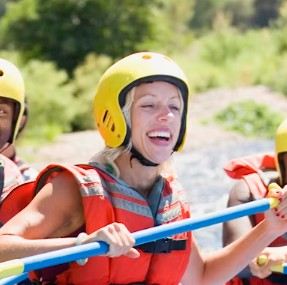

Welcome to Down the River! Our goal is to provide you with the best white water experience possible. For over 30 years, our family-owned business has been guiding thrill-seekers and families down the region's most exciting rivers. With our elite team of certified guides, we are completely dedicated to making your river adventure safe, memorable, and absolutely unforgettable.
